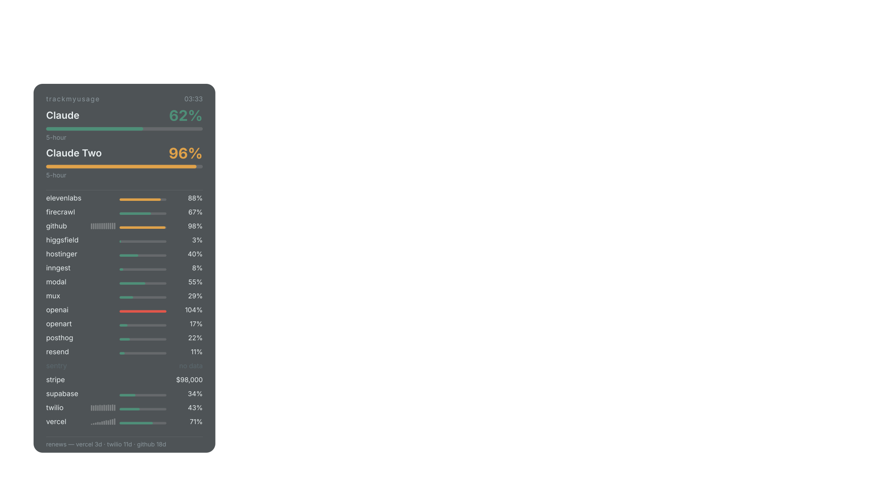
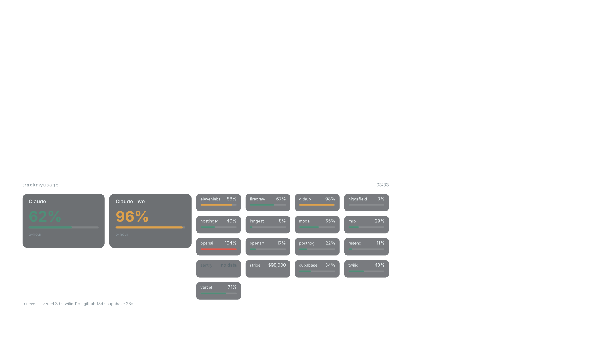
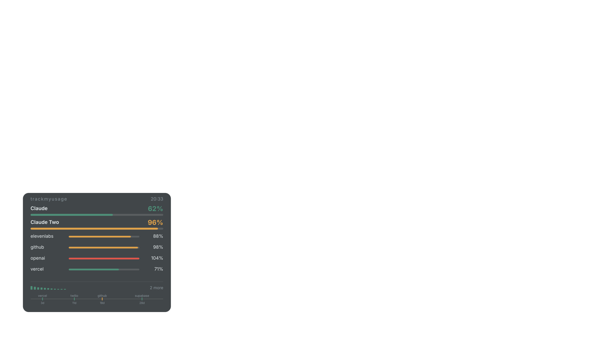

Run multiple Claude Desktop accounts on one Mac — properly, with real app identities rather than a wrapper. Then see every account's limit, and the rest of your stack's, in the menu bar and painted onto your wallpaper.
Apache-2.0 macOS 13+ Apple Silicon build from source — Homebrew is planned, not shipped

tmu assets wallpaper and regenerated in CI.
Open full size ↗
The problem
The obvious approach — and what existing tools do — is to launch the stock binary
with a different --user-data-dir. That separates the data but not the
identity, and macOS keys almost everything on identity.
| Symptom | Cause |
|---|---|
| Double-clicking Claude does nothing | Both processes exec from the same bundle, so LaunchServices thinks the app is already running and re-activates the other account's window |
| Sign-in lands in the wrong account | Claude calls setAsDefaultProtocolClient("claude") on every launch; last one wins |
| MCP OAuth callbacks vanish | The same tug-of-war, on claude://claude.ai/mcp-auth-callback/sdk |
The second app runs from AppTranslocation |
A quarantined bundle is relocated to a random read-only path by Gatekeeper, and registers itself twice |
How it works
Claude Desktop is never bundled or redistributed. TrackMyUsage clones the copy
already on your machine, leaves app.asar byte-for-byte untouched, and
never handles your credentials.
An APFS clonefile copy — sub-second, copy-on-write — with a
unique CFBundleIdentifier, re-signed inside-out, quarantine
cleared. LaunchServices now sees two different apps, because there are two.
The app hardcodes app.setName("Claude") and would otherwise
open the primary's profile, so each clone carries a small launcher that
injects its own --user-data-dir before Electron starts.
One tiny agent owns claude://, tracks which instance you were
last working in, and forwards each callback there — reclaiming the scheme
within about a second whenever an instance grabs it at launch.
The wallpaper
Three layouts, chosen per display — a laptop beside a large monitor usually wants the card on one and the ledger on the other. Every image below is produced by the same pure function that draws the real thing: snapshots in, SVG out.
Ledger. A left rail, every provider named and individually readable. Scales honestly to seventeen of them, and needs the vertical space to do it.

Board. Tiles across the bottom of a wide desktop — the same information, taken in at a glance rather than read downward. Falls back to the rail when the display is too narrow to carry it, rather than squeezing four columns into a laptop.

Card, alert. When something is hot the card grows, brightens and leads with the offender. The remaining providers compress into a strip so the one that matters is the one you read first.
Card, quiet. Under 80% it dims to a whisper and stops enumerating — two accounts and one line confirming the rest was checked. Attention is derived from the readings, never chosen: a setting would produce a permanently alert desktop, which is the same as no signal at all. Silence is information too.
Providers
A parser written from a remembered API shape is indistinguishable from a correct one
until it reports the wrong number. tmu provider probe captures a real
response so each adapter is written against fact — which is why this list is shorter
than it could be.
Loading…
This table is generated from ProviderRegistry and checked in CI, so the
counts here are structurally unable to overstate what actually ships.
Decisions, not accidents
Login keychain only, AfterFirstUnlockThisDeviceOnly, one account
per provider. Secrets are read from stdin and never from a flag — a flag lands
in shell history and in ps.
get. That single-method protocol is the GET-only
enforcement; there is no other verb to call. An adapter that could POST is an
adapter that could be made to change something.
Permission grants, OAuth token caches and org-suffixed keys are refused and reported, not copied. Carrying a permission grant between accounts is a security bug, not a convenience.
No data reads "no data". A stale number carries a ?. An
unmeasurable trend prints nothing rather than a flat line. A reading of 104%
renders as 104%, because clamping it would hide the thing worth seeing.
Snapshots in, SVG out; the daemon owns every byte of I/O. A layout regression
fails in swift test instead of appearing on somebody's desktop —
including the images on this page.
apply never deletes without --prune on the command
line, even when the manifest says otherwise. Manifests get shared; a file
someone else wrote must not be able to delete your extensions.
Get started
Requires macOS 13+ on APFS, Claude Desktop at /Applications/Claude.app,
and the Xcode command line tools.
$ git clone https://github.com/frogbark/trackmyusage && cd trackmyusage # Build and install the deep-link broker (once) $ ./scripts/build-link.sh $ cp -Rp "build/TrackMyUsage Link.app" /Applications/ $ ./scripts/install-link-agent.sh # Create an instance, then sign into it with your second account $ ./scripts/create-instance.sh "Work" --launch # See every account and service at once $ swift build -c release $ .build/release/tmu usage $ .build/release/tmud apply # paint it onto the wallpaper
You will see /Applications/Claudruple and it is not a typo. The project
was renamed, but that directory, each clone's bundle id and each clone's profile path
are baked into LaunchServices registrations, code signatures and a compiled-in
launcher path. Renaming them would not move anything — it would make working
instances unreachable, silently.
Free and open source under Apache-2.0. Nothing in the repository charges for anything, and the daemon never phones home with your usage.
{kind=link}
{kind=link}
{kind=link}
{kind=link}